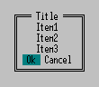

Message показывает сообщение.
intptr_t WINAPI Message( const GUID *PluginId, const GUID *Id, FARMESSAGEFLAGS Flags, const wchar_t *HelpTopic, const wchar_t * const *Items, size_t ItemsNumber, intptr_t ButtonsNumber );
GlobalInfo.Guid функции GetGlobalInfoW).| Флаг | Описание |
|---|---|
| FMSG_WARNING | Используются цвета "Предупреждения" (обычно белые буквы на красном фоне). |
| FMSG_ERRORTYPE | Если тип ошибки, возвращаемый функцией GetLastError, известен Far Manager'у или Windows,
то описание ошибки будет выведено после строк, переданных плагином. |
| FMSG_KEEPBACKGROUND | Не перерисовывать фон сообщения. |
| FMSG_LEFTALIGN | Использовать для строк сообщения выравнивание влево (по умолчанию строки выводятся по центру). |
| FMSG_ALLINONE | В этом случае аргумент Items не является массивом указателей на строки - это УКАЗАТЕЛЬ на одну
строку, в которой разделителем выводимых строк является символ '\n'.
Минимальное количество строк - 2 - заголовок и одна строка сообщения. При указании флага Для подавления вывода заголовка при использовании флага |
| FMSG_MB_OK | Дополнительно выводится кнопка <Ok> |
| FMSG_MB_OKCANCEL | Дополнительно выводятся кнопки <Ok> и <Cancel> |
| FMSG_MB_ABORTRETRYIGNORE | Дополнительно выводятся кнопки <Abort>, <Retry> и <Ignore> |
| FMSG_MB_YESNO | Дополнительно выводятся кнопки <Yes> и <No> |
| FMSG_MB_YESNOCANCEL | Дополнительно выводятся кнопки <Yes>, <No> и <Cancel> |
| FMSG_MB_RETRYCANCEL | Дополнительно выводятся кнопки <Retry> и <Cancel> |
| FMSG_NONE | Нулевой флаг |
NULL если подсказка не требуется.ButtonsNumber строк - кнопки, все остальные строки принадлежат телу сообщения.Items. Минимальное значение - 2 строки.FMSG_MB_* параметр ButtonsNumber игнорируется.-1, если пользователь отменил сообщение (или системе не удалось выделить достаточно памяти для внутренних буферов),
или выбранный номер кнопки (для первой кнопки - 0, для второй - 1 и так далее).
ButtonsNumber равен 0 (флаги FMSG_MB_* не используются) и выведенное сообщение больше не нужно, то плагин должен
восстановить экран, используя функцию RestoreScreen или любым другим путём.
ButtonsNumber не равен 0, то экран восстанавливает сам Far Manager.
Items указан NULL или количество элементов меньше двух.
FMSG_MB_* параметр ButtonsNumber игнорируется.
FMSG_ALLINONE для корректной компиляции кода необходимо произвести явное преобразование типов:
Info.Message(&MainGUID,&MsgGUID, FMSG_ALLINONE|FMSG_MB_OKCANCEL, L"HelpTopic", (const wchar_t * const *)L"Title\nItem1\nItem2\nItem3", 0,0);или const wchar_t *Msg=L"Title\nItem1\nItem2\nItem3\nOk\nCancel"; Info.Message(&MainGUID,&MsgGUID, FMSG_ALLINONE, L"HelpTopic", (const wchar_t * const *)Msg, 0,2); |
 |
BOOL IsDeleted(wchar_t *filename)
{
const wchar_t *Msg[5];
Msg[0]=GetMsg(MTitle); // заголовок сообщения
Msg[1]=GetMsg(MIsDeleted); // тело сообщения
Msg[2]=filename;
Msg[3]=GetMsg(MDelete); // последние ButtonsNumber (2) строк - кнопки
Msg[4]=GetMsg(MCancel);
return Info.Message(&MainGUID,&MsgGUID,
0,
L"DeleteFile",
Msg,
sizeof(Msg)/sizeof(Msg[0]),
2) == 0;
}
Причём, Info определяется как глобальная переменная:
struct PluginStartupInfo Info;...а инициализируется она в функции SetStartupInfoW:
void WINAPI SetStartupInfoW(struct PluginStartupInfo *Info)
{
...
::Info=*Info;
...
}